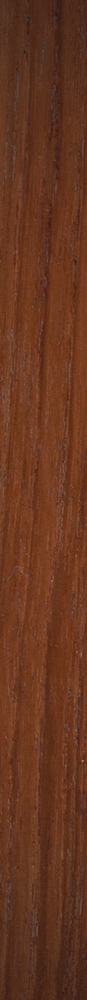
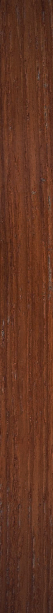

 
Master
On/Off
Volume
Octave
Tuning
Portamento
Filter
Cutoff
Lowpass
Highpass
Resonance
Filter Attack
Filter Decay
Filter Sustain
Osc 1
Level 1
Octave 1
Attack 1
Decay 1
Sustain 1
Release 1
Osc 2
Level 2
Detune 2
Attack 2
Decay 2
Sustain 2
Release 2
Presets
Preset 0
Preset 1
Preset 2
Preset 3
Preset 4
Preset 5
Preset 6
Preset 7